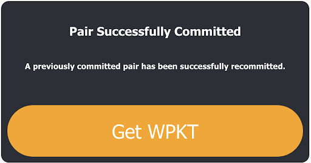
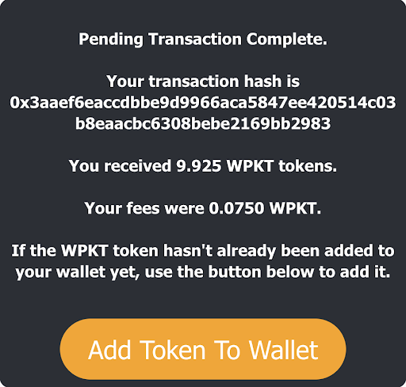
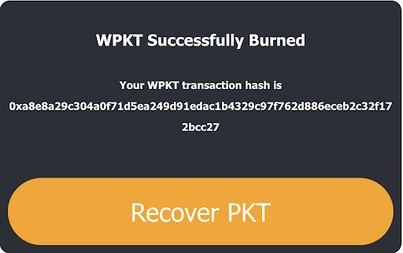
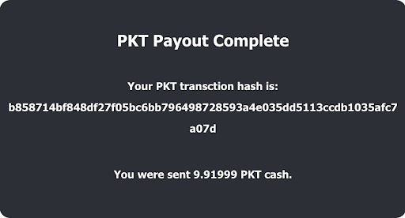

Steps to swap PKT to wPKT¶
- Buy PKT on Bittrex Global (Non-USA traders) or BitMart (Global traders)
- Create a metamask wallet and connect to the Binance Smart Chain
- Goto www.ODApp.io
- Connect your metamask wallet
- Please note there is a %0.075 fee associated with swapping
- Pre-commit your wallet by entering the PKT sender address. This is the address that you will be sending your PKT from. (Please note: This address must be from a PKT wallet (Electrum, Zulu or PKT World. Once you commit this address it is the only address you can use to convert PKT to wPKT and wPKT to PKT.
- After you submit you should see Pair Successfully Committed. 
- Click Get WPKT
- Using the PKT wallet address you used in step 5, Send the amount of PKT you want to wrap to wPKT to ODApp's "VAULT" address,
pkt1qex9d4fjwc0nqr3x0hex6ds5vpu67efjdlm6ckz - Make sure to copy the Transaction ID as you will need this in the coming steps
- For security, you will need to wait about 7 minutes to claim your WPKT. For transactions greater than 7 million PKT could take up to 3 hours to complete.
- Enter your PKT transaction ID, the address you sent your PKT from, and the BSC address you would like your WPKT sent to. You will need to hold some BNB coin in your metamask wallet to pay for fees in this process.
- If successful the following notification will populate and you will then have the ability to add wPKT token to your wallet. This will prompt your metamask wallet to open and allow you to add your tokens. 
- Go check your wPKT wallet and make sure your coins were deposited. You can always copy your PKT transaction hash into etherscan.io and you should see the transaction on the blockchain.
Steps to swap wPKT to PKT¶
- You should already have either purchased wPKT on PancakeSwap or swapped your PKT into wPKT
- Please note there is a %.075 fee associated with swapping
- Log into your metmask wallet
- You must have some BNB in your wallet as you will need this for fees associated with swapping.
- Open your PKT wallet
- Goto www.ODApp.io and connect your metamask wallet
- Enter the amount of wPKT you want to convert to PKT
- Enter the PKT wallet address you would like the PKT deposited into
- The following prompt should show if you successfully burned the coins 
- Press Recover PKT and this prompt should show 
- Go check your PKT wallet and make sure your coins were deposited. You can always copy your PKT transaction hash into
https://explorer.pkt.cashand you should see the transaction on the blockchain.